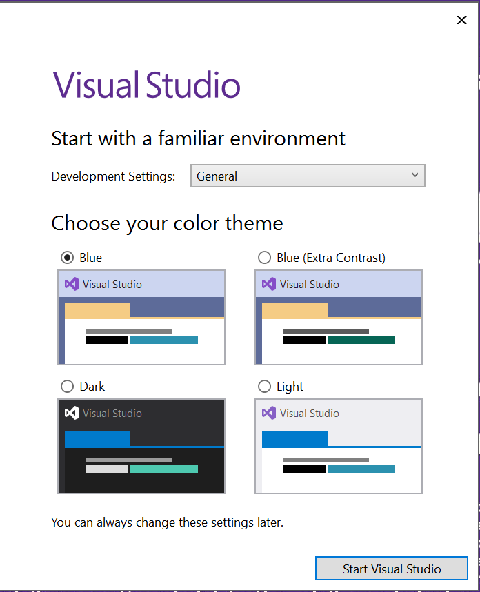

Installing Visual Studio
Installing Visual Studio
Visual Studio Community 2022 is available on the machines we use for CIS 300 labs, as well as on machines in other lab classrooms. Students can also access Visual Studio via a remote desktop server — see the CS Department Support Wiki for details. This edition of Visual Studio is also freely available for installation on your own PC for your personal and classroom use. This section provides instructions for obtaining this software from Microsoft and installing it on your PC.
While Microsoft also produces a version of Visual Studio for Mac, we recommend the Windows version. If you don’t have a Microsoft operating system, you can obtain one for free from the Azure Portal — see the CS Department Support Wiki for details. You will need to install the operating system either on a separate bootable partition or using an emulator such as VMware Fusion. VMware Fusion is also available for free through the VMware Academic Program — see the CS Department Support Wiki for details.
To download Visual Studio Community 2022, go to Microsoft’s Visual Studio Site, and from the “Download Visual Studio” dropdown, select “Community 2022”. This should normally begin downloading an installation file; if not, click the “click here to retry” link near the top of the page. When the download has completed, run the file you downloaded. This will start the installation process.
As the installation is beginning, you will be shown a window asking for the components to be installed. Click the “Workloads” tab in this window, and select “.NET desktop development” (under “Desktop & Mobile”). You can select other workloads or components if you wish, but this workload will install all you need for CIS 300.
The first time you run Visual Studio, you will be asked to sign in to your Microsoft account. You can either do this or skip it by clicking, “Not now, maybe later.” You will then be shown a window resembling the following:

Next to “Development Settings:”, select “Visual C#”. You can select whichever color scheme you prefer. At this point, Visual Studio should be fully installed and ready to use.